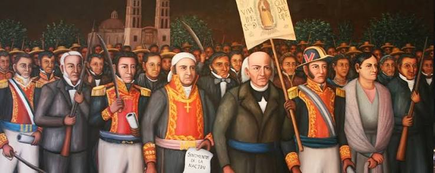

Datos Curiosos y Mitos
- El Grito no fue a medianoche: El cura Miguel Hidalgo dio el llamado a las armas en la mañana del 16 de septiembre de 1810, no a la medianoche del 15. La tradición de celebrarlo el 15 por la noche fue impulsada por Porfirio Díaz.
- La imagen de la Virgen: Hidalgo no utilizó una bandera tricolor, sino un estandarte de la Virgen de Guadalupe tomado del santuario de Atotonilco como símbolo de unión insurgente.
- El Pípila: Aunque la leyenda cuenta que un solo hombre (Juan José de los Reyes Martínez) transportó una losa de piedra para quemar la puerta de la Alhóndiga de Granaditas, historiadores señalan que fue una proeza colectiva o simboliza la valentía popular.
- El mito de Juan Escutia: La historia popular narra que el joven cadete se envolvió en la bandera nacional y se arrojó al vacío para evitar su captura; sin embargo, investigaciones sugieren que pudo haber sido abatido defendiendo la posición.

¡VIVA MÉXICO!